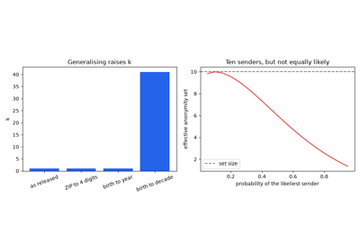
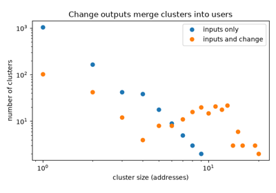
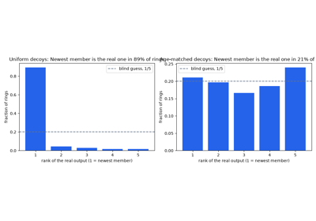
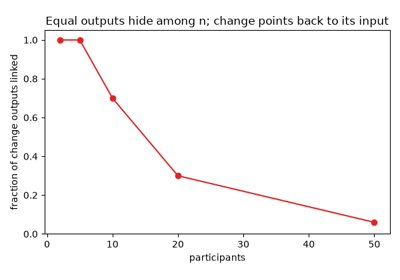
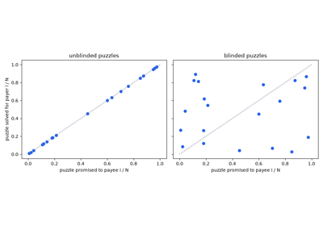
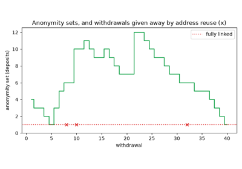
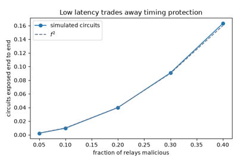
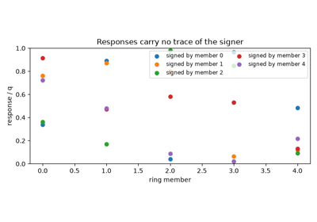
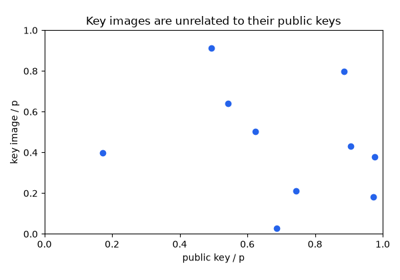
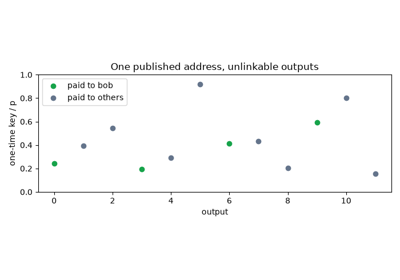

Examples#
This gallery walks through blockchainkit.privacy, one experiment per
breakthrough on the privacy history page:
Chaum’s mix-nets and Tor’s onion routing; ring signatures, key images and
stealth addresses; k-anonymity, address clustering and Monero’s
traceability; CoinJoin, TumbleBit and Tornado Cash; and the hidden amounts
of Zerocoin, confidential transactions, RingCT and Mimblewimble.
Each script is self-contained and runs with
python examples/privacy/<section>/<script>.py.
Measuring anonymity#
What a public record reveals: anonymity sets, address clusters, and traceable rings.

k-anonymity and anonymity sets: hiding among k (2002)

A Fistful of Bitcoins: clustering addresses by owner (2013)

Traceability in Monero: when decoys fail (2018)
Mixing coins#
Breaking the link between payer and payee: joint transactions, blind tumblers, and mixer contracts.

CoinJoin: many payers, one transaction (2013)

TumbleBit: an untrusted tumbler that cannot link payments (2017)

Tornado Cash: a mixer contract with zero-knowledge withdrawals (2019)
Anonymous networks#
Hiding who talks to whom: mixes that batch and shuffle, and low-latency onion routing.

Onion routing in Tor: fast, but exposed end to end (2004)
Ring signatures and stealth addresses#
Signing for a group without saying who, spending only once, and paying a fresh key every time.

Ring signatures: leaking a secret for a group (2001)

Linkable ring signatures and key images (2004)

CryptoNote stealth addresses: a fresh key for every payment (2013)